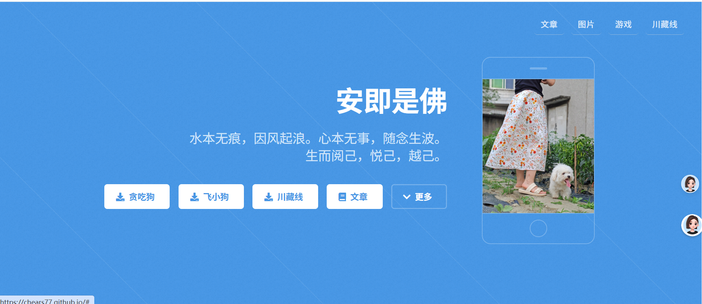

前段时间自己用 GitHub Pages 搭了一个个人网页，免费的，绑了自己的域名，弄好之后觉得挺好看，发了个朋友圈，结果好几个朋友来问怎么做的。（完全免费，可以更新文章，也可以互联网内访问）


后来我帮其中一个朋友也做了一个，他用来放自己的摄影作品。做完他给我转了个红包，说"早知道自己搞这么麻烦，花钱找人弄多好"。
我当时就想，这件事是不是可以认真做一下。
其实就是帮那些想有一个自己网站、但不想折腾技术的人，把从注册到上线这条路走通。我主要是帮助你在电脑本地建站，再将你的静态网页内容发布到互联网，这样别人就可以访问了。当然如果你不会制作你的静态网页，我也准备好了几套模板，客户选一个喜欢的风格，把照片和文字发我，我来填进去，然后帮你上传到互联网供他人访问）
这件事有个好处——每帮一个人做完，就多一个可以展示的案例。
最近也在想，除了代建网站，能不能顺便帮客户把内容也写了。很多人的问题是不知道自己网站上该放什么、怎么写。个人简介、作品说明、甚至是一段自己的小故事，其实都可以代劳。这部分按工作量单独收费。
我自己在成都，平时上班时间比较灵活，想认真把这件事当副业跑一跑。发这篇文章有几个想法：
一个是找第一个客户。 如果你或者你身边有人一直想有个自己的网站，又嫌麻烦、怕花钱，可以找我聊聊。第一个客户我只收个友情价，主要是想把流程跑通、把案例做好。
另一个是找个搭子。 如果你在成都，会前端、会设计、或者会写内容，也对这个方向感兴趣，我们可以一起搞。一个人做效率太低，两个人可以分工，一个管模板和部署，一个管内容跟客户沟通，互补。
我在成都，双流区这边。如果你碰巧刷到这篇，觉得这事有点意思，评论区说句话或者私信我都行。